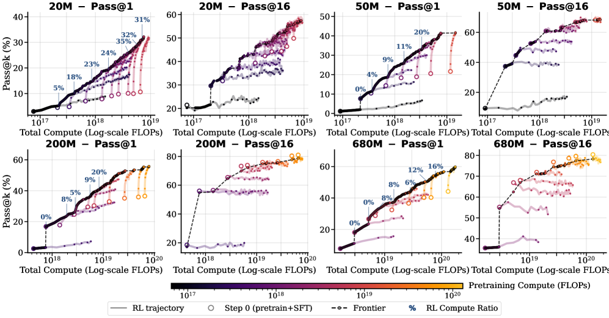
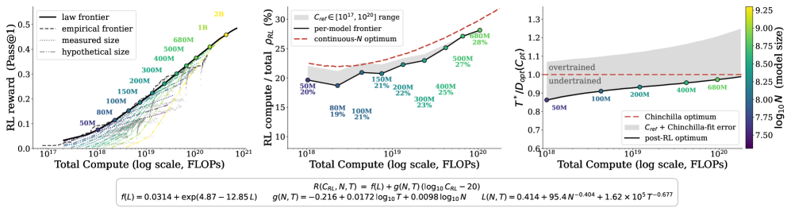

Scaling Law for Pretrain vs RL Compute Allocation
Paper: "Understanding Reasoning from Pretraining to Post-Training" (arXiv 2607.16097), by Jingyan Shen, Ang Li, Salman Rahman, Yifan Sun, Micah Goldblum, Matus Telgarsky, and Pavel Izmailov; submitted July 17, 2026. Grounded in the fetched abstract and full-text (HTML) excerpts.
TL;DR
- A controlled study of the full pretrain → SFT → RL reasoning pipeline using chess as the testbed: models from 5M to 1B parameters (10 scales) pretrained on 54B tokens of human Lichess games, SFT'd on synthetic tree-structured reasoning traces, then RL'd with GRPO and binary rewards on 156K quality-filtered puzzles.
- Two headline regularities: post-RL performance at a given RL compute level is well-predicted by pretraining loss alone, and the slope of the RL reward curve improves approximately linearly with pretraining tokens — jointly fit as R(C_RL, N, T) = f(L_pt(N, T)) + g(N, T)·(log10 C_RL − log10 C_ref). Under this law, the compute-optimal RL fraction grows with total budget: ~20% at 50M to ~28% at 680M params.
- Mechanistically, RL does different things by difficulty: on easy puzzles it amplifies correct moves the SFT policy already preferred ("ground-truth amplification"); on hard puzzles it surfaces correct moves from the low-probability tail ("tail discovery") but also reinforces incorrect modes ("wrong-mode amplification") — which explains limited pass@k improvement.
Why this matters
Post-training with verifiable rewards is now a first-class consumer of compute, but the field has been allocating between pretraining and RL by folklore. Pretraining has had predictive scaling laws since Kaplan/Chinchilla; RL post-training has had almost nothing of the kind, partly because at frontier scale you cannot afford the grid of controlled runs a scaling law requires, and partly because on natural-language reasoning it is genuinely hard to disentangle what RL adds from what pretraining already contained. This paper buys back experimental control by moving to chess: cheap verifiable rewards (puzzle solutions), a clean difficulty axis, a natural pretraining corpus (human games) that is distinct from the RL task (puzzles), and small enough models (5M–1B) that a 10-scale sweep of the full three-stage pipeline is feasible.
For your reading thread the relevance is twofold. First, the practical question — how much of my budget should RL get? — gets an actual functional form with an answer that shifts with scale. Second, and more connected to your OPD cluster: OPD is marketed as the cheap alternative to RL for post-training (dense token supervision instead of sparse rewards). Knowing what RL's marginal compute actually buys — and that its returns are largely set by pretraining quality — is the baseline any distillation-vs-RL argument has to be priced against.
The core idea
The key insight is that pretraining and RL are not independent budget lines; RL's productivity is a function of the pretraining you did first, and that function is regular enough to fit. Concretely, two decoupled roles fall out of the experiments:
- Pretraining loss sets the level. Where the model starts and where it lands after a given amount of RL compute is well-predicted from L_pt alone — models with equal pretraining loss but different (N, T) combinations behave near-identically under RL. Pretraining loss is a sufficient statistic for RL-readiness (within this setup).
- Pretraining data scale sets the slope. How fast RL reward improves per log-unit of RL compute grows approximately linearly with pretraining tokens. More pretraining doesn't just raise the starting point — it makes each RL FLOP more productive.
Put together as a joint scaling law, this yields a compute-allocation rule the same way Chinchilla did for tokens-vs-parameters: for a fixed total budget, solve for the RL share that maximizes final reward. Because the slope term strengthens with pretraining scale, the optimum shifts toward RL as budgets grow — but stays minority-share (~20–28%) throughout the studied range.

Figure from the paper: Empirical frontier of puzzle benchmark performance across pretraining–RL sweeps for four model sizes (20M, 50M, 200M, 680M). The RL ratio on the frontier increases with total compute.
How it works
The pipeline, per the full text:
- Pretrain: language models at 10 scales from 5M to 1B parameters, on 54B tokens of human games from Lichess (games encoded as text).
- SFT: fine-tune on synthetic reasoning traces — tree-structured move-sequence explorations constructed from puzzle data — so the model has a deliberate "search-like" reasoning format before RL.
- RL: GRPO on 156K quality-filtered Lichess puzzles with binary reward — 1 if the full puzzle solution is correct, 0 otherwise.
- Fit: sweep RL compute at each pretraining configuration and fit the joint law R(C_RL, N, T) = f(L_pt(N, T)) + g(N, T)·(log10 C_RL − log10 C_ref) where f maps pretraining loss to the performance level and g — increasing roughly linearly in pretraining tokens T — is the RL improvement rate per decade of RL compute.
- Allocate: for total budget C = C_pt + C_RL, the fitted law implies an optimal split; per Figure 4(b), "the optimal RL fraction increases with total compute, from approximately 20% at 50M to 28% at 680M."
- Mechanism analysis: decompose where RL's gains come from by puzzle difficulty, tracking whether reinforced correct moves were already high-probability under the SFT policy or came from the tail.
- Transfer check: validate the qualitative findings on math-domain text, to argue the chess results aren't domain artifacts (extent and details of this validation — verify in the paper).
The fitted forms, from the paper's HTML. The joint law and its per-configuration local version (Eq. 1):
where \(R\) is puzzle reward, \(N\) parameters, \(T\) pretraining tokens, \(C_{\mathrm{RL}}\) RL compute, \(C_{\mathrm{ref}}\) a reference compute; \(f\) (the level) is read off the pretraining loss \(L_{\mathrm{pt}}\), and \(g\) (the slope, fit locally as \(B_{N,T}\)) grows roughly linearly in \(\log_{10}T\) — neither is given a closed form; both are empirical fits (Fig. 3).
The supporting accounting: pretraining loss follows a Chinchilla-form law (Eq. 3), and compute is estimated per stage (Eq. 2 and the RL analogue):
where \(E, A, B, \alpha, \beta\) are fitted constants and \(L_{\mathrm{rl}}^{(q,i)}\) is the length of rollout \(i\) for prompt \(q\) (the factor 10 covers generation plus update passes).

Figure from the paper: Extrapolated compute-optimal frontier. (a) Simulated optimal reward per model size with global frontier. (b) Optimal RL fraction increases from ~20% to 28% with compute. (c) Pretraining tokens relative to Chinchilla.
# Experimental pipeline (condensed; the paper describes it in
# equations and text, with no formal algorithm box)
for N in 10 model scales (5M .. 1B):
pretrain on Lichess human-game text (up to 54B tokens); record L_pt(N,T)
SFT on synthetic tree-structured reasoning traces
for increasing RL compute C_RL:
run GRPO on 156K quality-filtered puzzles, binary reward r in {0,1}
# J_GRPO = E[ (1/G) sum_i (1/|o_i|) sum_t min(rho_it * A_i,
# clip(rho_it, 1-eps, 1+eps) * A_i) ] - beta * KL(pi || pi_ref)
log puzzle reward R at checkpoints
fit local law: R_{N,T}(C) = R_ref + B_{N,T} * (log10 C - log10 C_ref)
# joint fit across all (N, T):
# level f : post-RL performance vs pretraining loss L_pt (Fig. 3a)
# slope g : B_{N,T} vs log10 T (and log10 N) (Fig. 3b-c)
# allocation: for total budget C = C_pt + C_RL, maximize predicted R
# -> optimal RL fraction ~20% (50M) rising to ~28% (680M) (Fig. 4b)
The difficulty-resolved mechanism is the part worth reading closely. On easy puzzles, RL is mostly sharpening: it amplifies correct moves the SFT policy already preferred, i.e., redistributes probability mass toward modes that were already dominant. On hard puzzles two things happen at once: tail discovery — genuinely low-probability correct moves get surfaced and reinforced — and wrong-mode amplification — confidently wrong modes also get reinforced, since with binary sequence-level rewards and GRPO-style advantage estimates, spurious credit lands on whatever the policy happened to sample. The paper connects this directly to the limited pass@k improvement from RL: if sharpening dominates, pass@1 rises while the support of correct behavior (what pass@k measures) barely widens.
Results
Numbers verified from abstract and full-text excerpts:
- Setup magnitudes: 5M–1B parameters, 10 scales; 54B pretraining tokens (Lichess games); 156K quality-filtered puzzles for RL; GRPO with binary reward.
- Level prediction: "post-RL performance at given RL compute level is well-predicted from the pretraining loss."
- Slope law: "the slope of the RL reward curves improves approximately linearly with the pretraining tokens."
- Optimal allocation: "the optimal RL fraction increases with total compute, from approximately 20% at 50M to 28% at 680M." (The thread rounds this to 20%→30% over 50M→700M; the paper's figures say 28% at 680M.)
- Mechanism: ground-truth amplification on easy puzzles; tail discovery plus wrong-mode amplification on hard puzzles, "explaining limited pass@k improvements."
- Transfer: findings validated on math-domain text (qualitative; no numbers in my excerpts).
How it connects
- Chinchilla-style allocation logic: same move — fit a joint law, derive a budget split — with RL compute replacing the tokens/parameters trade-off. The fitted form (level from pretraining loss + log-linear RL term) is deliberately minimal; expect follow-ups testing saturation terms.
- The "does RLVR expand or sharpen?" debate: the pass@k-based skepticism about RL with verifiable rewards (RL raising pass@1 while pass@k stays flat, suggesting RL mostly reweights existing capabilities) is exactly what this paper's easy-puzzle regime reproduces — but the hard-puzzle tail discovery result is a concrete, controlled counterexample to the strong "RL never finds anything new" position. Both camps get a mechanism here, indexed by task difficulty.
- Your OPD cluster: this paper is the RL-side complement. If RL's main effect at moderate difficulty is amplifying what SFT/pretraining already put in the distribution, then distillation-based transfer of that amplified delta is a sensible substitute — which is precisely OPD²'s premise (transfer the teacher-minus-base delta induced by reasoning tuning). And the wrong-mode-amplification failure on hard puzzles parallels the OPD failure modes in your no-free-lunch item: in both cases, on-policy training reinforces whatever the current policy can reach, for better or worse.
- Small-model reasoning testbeds: the chess-as-model-organism approach trades external validity for the ability to run the entire pipeline at 10 scales — the same trade the classic scaling-law papers made, applied one stage later in the pipeline.
Critical take
- Domain externality is the big caveat. Chess has a perfect verifier, a stationary rule set, dense difficulty grading, and pretraining data (games) that is unusually on-task for the RL objective (puzzles). Frontier RLVR operates on messy verifiers, heterogeneous task mixes, and pretraining corpora far less aligned with the reward distribution. The math-text validation helps, but the 20–28% allocation numbers should not be quoted for LLM budgets — the shape (RL share grows with budget, stays minority) is the exportable claim, and even that needs replication at scale.
- ≤1B parameters and one RL algorithm. GRPO with binary sequence-level reward is one point in RL-recipe space; process rewards, curriculum, or entropy control could change both slope and mechanism (wrong-mode amplification in particular looks like a binary-reward artifact as much as an RL fundamental).
- Pretraining loss as sufficient statistic may be fragile. With a single pretraining distribution, loss and data composition are confounded; with mixed corpora at frontier scale, two models with equal loss can have very different RL-relevant skills. The claim is well-supported within-domain and should be tested across-domain.
- Open questions: does the log-linear RL term saturate (the law as excerpted has no plateau)? How does the optimal fraction shift when SFT quality varies independently? And does tail discovery scale — do bigger models do proportionally more discovery and less sharpening, or less?
If you remember three things
- Pretraining loss predicts the post-RL performance level; pretraining tokens set the RL improvement slope (≈linearly) — jointly: R = f(L_pt) + g(N,T)·Δlog10 C_RL.
- Compute-optimal RL share rises with total budget but stays minority: ~20% at 50M params → ~28% at 680M, in this chess testbed.
- RL's mechanism is difficulty-dependent: sharpening (ground-truth amplification) on easy tasks; on hard tasks, genuine tail discovery and wrong-mode amplification — which is why pass@k moves so little.